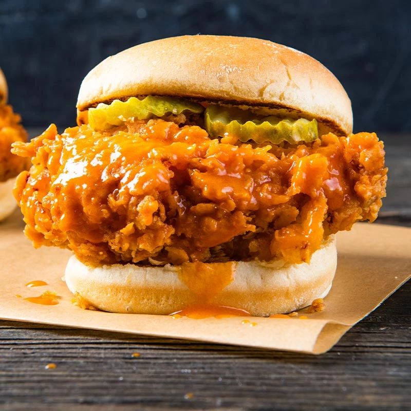

Spicy Chicken Sandwhich

Description
Who’s really winning the chicken sandwich wars? This baby … that’s who. Featuring crispy, crunchy, restaurant-style fried chicken drenched in a hot and buttery Frank’s RedHot® Original Hot Sauce concoction and served on pillowy rolls, this spicy chicken sandwich is #1 in our book. (But hey, may the best sammie win!)
Ingredients
- 3/4 cup Frank's RedHot® Original Cayenne Pepper Hot Sauce, divided
- 1 cup butter milk, divided
- 6 thinly sliced boneless skinless chicken breast cutlets, (about 1 pound)
- 2 cups flour
- 2 teaspoons baking powder
- 1 cup vegetable oil, for frying
- 2 tablespoons melted butter
- 6 soft white sandwhich rolls
- Dill pickle slices, optional
Instructions
- WHISK 1/2 cup of the RedHot Sauce and 2/3 cup of the buttermilk in large bowl. Add chicken, turning to coat. Cover and refrigerate 1 hour or longer for more flavor.
- MIX flour and baking powder in large bowl. Stir in remaining 1/3 cup buttermilk using a large fork. With clean hands, rub flour mixture between palms until mixture is completely blended and resembles wet sand. Transfer to shallow baking dish.
- REMOVE chicken from marinade. Place chicken in flour mixture, one piece at a time, pressing to coat completely on both sides. Discard remaining marinade and flour mixture.
- HEAT oil to 375°F in 10-inch skillet. Fry chicken, two pieces at a time, about 4 minutes per side or until golden brown and cooked through. Drain on paper towel-lined plate; keep warm.
- MIX remaining 1/4 cup RedHot Sauce and butter in small bowl. Brush fried chicken evenly with sauce mixture. Serve chicken on rolls with pickles, if desired.
Home